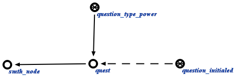

Задачей агента проверки соответствия мощности множеств с указанным типом
является нахождение множеств, мощность которых не соответствует их типу. Данный агент инициируется при условии появления в памяти вопросной конструкции, соответствующей
запросу проверки соответствия мощности множества с его типом. Аргументом запроса выступает структура, соответствия мощностей множеств с указанным типом которых нужно проверить. Пример вопросной конструкции представлен ниже:
